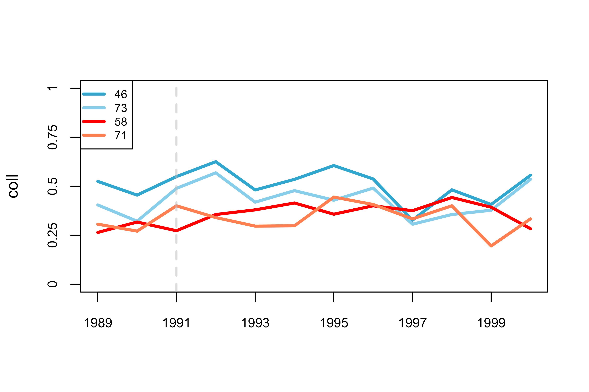
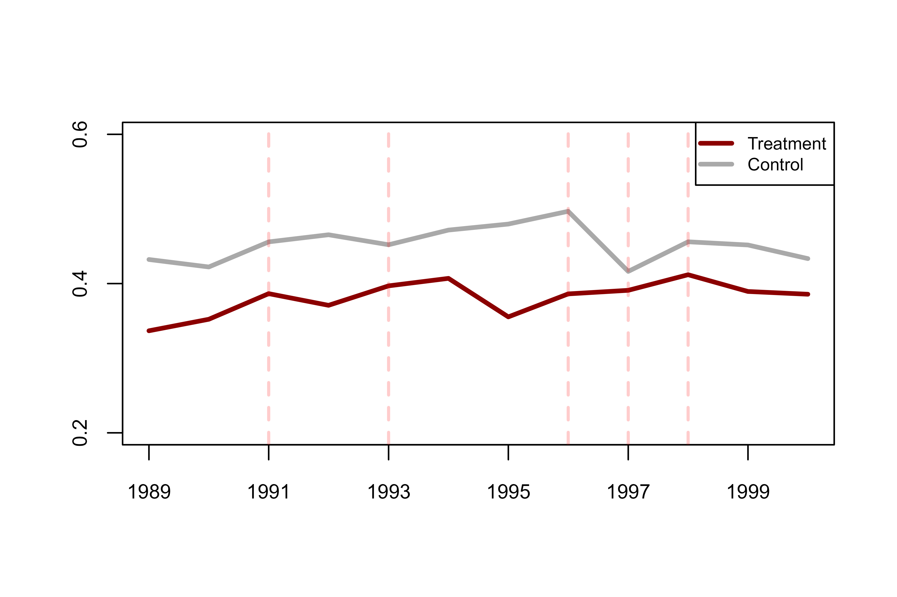

Introduction
The undidR package implements difference-in-differences with unpoolable data (UNDID); a framework that enables the estimation of the average treatment effect on the treated (ATT) when the data from different silos is not poolable. UNDID allows for staggered or common adoption and the inclusion of covariates.
In addition, undidR also implements the randomization inference (RI) procedure for difference-in-differences described in MacKinnon and Webb (2020) to calculate RI p-values.
Below is an overview of the undidR framework:

Schematic of the UNDID framework.
The following sections detail some examples of implementing undidR at each of its three stages for both staggered and common adoption scenarios.
1. Stage One: Initialize
When calling create_init_csv() silo names must be
specified along with their corresponding treatment times. Consequently,
the silos_names vector must be the same length as the
treatment_times vector.
All dates must be entered in the same date format. To see valid date
formats within the undidR package call
undid_date_formats().
Covariates may be specified when calling either
create_init_csv() or when calling
create_diff_df() via the covariates
parameter.
1.1 Common Treatment Time (Stage One)
# First, an initializing CSV is created detailing the silos
# and their treatment times. Control silos (here, 73 and 46)
# should be labelled with "control".
init <- create_init_csv(silo_names = c("73", "46", "71", "58"),
start_times = "1989",
end_times = "2000",
treatment_times = c("control", "control",
"1991", "1991"))
#> init.csv saved to: C:/Users/Eric Bruce Jamieson/AppData/Local/Temp/RtmpMvtemU/init.csv
init
#> silo_name start_time end_time treatment_time
#> 1 73 1989 2000 control
#> 2 46 1989 2000 control
#> 3 71 1989 2000 1991
#> 4 58 1989 2000 1991
# After the initializing CSV file is created, `create_diff_df()`
# can be called. This creates the empty differences data frame which
# will then be filled out at each individual silo for its respective portion.
init_filepath <- normalizePath(file.path(tempdir(), "init.csv"),
winslash = "/", mustWork = FALSE)
empty_diff_df <- create_diff_df(init_filepath, date_format = "yyyy",
freq = "yearly")
#> empty_diff_df.csv saved to: C:/Users/Eric Bruce Jamieson/AppData/Local/Temp/RtmpMvtemU/empty_diff_df.csv
empty_diff_df
#> silo_name treat common_treatment_time start_time end_time weights
#> 1 73 0 1991 1989-01-01 2000-01-01 standard
#> 2 46 0 1991 1989-01-01 2000-01-01 standard
#> 3 71 1 1991 1989-01-01 2000-01-01 standard
#> 4 58 1 1991 1989-01-01 2000-01-01 standard
#> diff_estimate diff_var diff_estimate_covariates diff_var_covariates
#> 1 NA NA NA NA
#> 2 NA NA NA NA
#> 3 NA NA NA NA
#> 4 NA NA NA NA
#> covariates date_format freq
#> 1 none yyyy 1 year
#> 2 none yyyy 1 year
#> 3 none yyyy 1 year
#> 4 none yyyy 1 year1.2 Staggered Adoption (Stage One)
# The initializing CSV for staggered adoption is created in the same way.
# When `create_diff_df()` is run, it will automatically detect whether or not
# the initial setup is for a common adoption or staggered adoption scenario.
init <- create_init_csv(silo_names = c("73", "46", "54", "23", "86", "32",
"71", "58", "64", "59", "85", "57"),
start_times = "1989",
end_times = "2000",
treatment_times = c(rep("control", 6),
"1991", "1993", "1996", "1997",
"1997", "1998"))
#> init.csv saved to: C:/Users/Eric Bruce Jamieson/AppData/Local/Temp/RtmpMvtemU/init.csv
init
#> silo_name start_time end_time treatment_time
#> 1 73 1989 2000 control
#> 2 46 1989 2000 control
#> 3 54 1989 2000 control
#> 4 23 1989 2000 control
#> 5 86 1989 2000 control
#> 6 32 1989 2000 control
#> 7 71 1989 2000 1991
#> 8 58 1989 2000 1993
#> 9 64 1989 2000 1996
#> 10 59 1989 2000 1997
#> 11 85 1989 2000 1997
#> 12 57 1989 2000 1998
# Creating the empty differences data frame and associated CSV file is
# the same for the case of staggered adoption as it is for common adoption.
init_filepath <- normalizePath(file.path(tempdir(), "init.csv"),
winslash = "/", mustWork = FALSE)
empty_diff_df <- create_diff_df(init_filepath, date_format = "yyyy",
freq = "yearly",
covariates = c("asian", "black", "male"))
#> empty_diff_df.csv saved to: C:/Users/Eric Bruce Jamieson/AppData/Local/Temp/RtmpMvtemU/empty_diff_df.csv
head(empty_diff_df, 4)
#> silo_name gvar treat diff_times gt RI start_time end_time
#> 1 73 1991 0 1991;1990 1991;1991 0 1989 2000
#> 2 73 1991 0 1992;1990 1991;1992 0 1989 2000
#> 3 73 1991 0 1993;1990 1991;1993 0 1989 2000
#> 4 73 1991 0 1994;1990 1991;1994 0 1989 2000
#> diff_estimate diff_var diff_estimate_covariates diff_var_covariates
#> 1 NA NA NA NA
#> 2 NA NA NA NA
#> 3 NA NA NA NA
#> 4 NA NA NA NA
#> covariates date_format freq
#> 1 asian;black;male yyyy 1 year
#> 2 asian;black;male yyyy 1 year
#> 3 asian;black;male yyyy 1 year
#> 4 asian;black;male yyyy 1 year2. Stage Two: Silos
The second stage function, undid_stage_two(), creates
two CSV files. The first is the filled portion of the differences data
frame for the respective silo. The second captures the mean (and the
mean residualized by the specified covariates) of the outcome variable
from the start_time to the end_time in
intervals of freq.
These are returned from undid_stage_two() as a list of
two data frames which can be accessed by the suffixes of
$diff_df and $trends_data, respectively.
2.1 Common Treatment Time (Stage Two)
# When calling `undid_stage_two()`, ensure that the `time_column` of
# the `silo_df` contains only character values, i.e. date strings.
silo_data <- silo71
silo_data$year <- as.character(silo_data$year)
empty_diff_filepath <- system.file("extdata/common", "empty_diff_df.csv",
package = "undidR")
stage2 <- undid_stage_two(empty_diff_filepath, silo_name = "71",
silo_df = silo_data, time_column = "year",
outcome_column = "coll", silo_date_format = "yyyy")
#> filled_diff_df_71.csv saved to: C:/Users/Eric Bruce Jamieson/AppData/Local/Temp/RtmpMvtemU/filled_diff_df_71.csv
#> trends_data_71.csv saved to: C:/Users/Eric Bruce Jamieson/AppData/Local/Temp/RtmpMvtemU/trends_data_71.csv
head(stage2$diff_df, 4)
#> silo_name treat common_treatment_time start_time end_time weights
#> 1 71 1 1991 1989-01-01 2000-01-01 0.914762741652021
#> diff_estimate diff_var diff_estimate_covariates diff_var_covariates
#> 1 0.05879783 0.002597221 NA NA
#> covariates date_format freq
#> 1 none yyyy 1 year
head(stage2$trends_data, 4)
#> silo_name treatment_time time mean_outcome mean_outcome_residualized
#> 1 71 1991 1989 0.3061224 NA
#> 2 71 1991 1990 0.2708333 NA
#> 3 71 1991 1991 0.4000000 NA
#> 4 71 1991 1992 0.3400000 NA
#> covariates date_format freq
#> 1 none yyyy 1 year
#> 2 none yyyy 1 year
#> 3 none yyyy 1 year
#> 4 none yyyy 1 year2.2 Staggered Adoption (Stage Two)
# Here we can see that calling `undid_stage_two()` for staggered adoption
# is no different than calling `undid_stage_two()` for common adoption.
silo_data <- silo71
silo_data$year <- as.character(silo_data$year)
empty_diff_filepath <- system.file("extdata/staggered", "empty_diff_df.csv",
package = "undidR")
stage2 <- undid_stage_two(empty_diff_filepath, silo_name = "71",
silo_df = silo_data, time_column = "year",
outcome_column = "coll", silo_date_format = "yyyy")
#> filled_diff_df_71.csv saved to: C:/Users/Eric Bruce Jamieson/AppData/Local/Temp/RtmpMvtemU/filled_diff_df_71.csv
#> trends_data_71.csv saved to: C:/Users/Eric Bruce Jamieson/AppData/Local/Temp/RtmpMvtemU/trends_data_71.csv
head(stage2$diff_df, 4)
#> silo_name gvar treat diff_times gt RI start_time end_time
#> 1 71 1991 1 1991;1990 1991;1991 0 1989-01-01 2000-01-01
#> 2 71 1991 1 1992;1990 1991;1992 0 1989-01-01 2000-01-01
#> 3 71 1991 1 1993;1990 1991;1993 0 1989-01-01 2000-01-01
#> 4 71 1991 1 1994;1990 1991;1994 0 1989-01-01 2000-01-01
#> diff_estimate diff_var diff_estimate_covariates diff_var_covariates
#> 1 0.12916667 0.009447555 0.116348472 0.009397021
#> 2 0.06916667 0.008602222 0.069515594 0.008272557
#> 3 0.02546296 0.007975422 0.005133291 0.007767637
#> 4 0.02703901 0.008564103 0.029958108 0.008338060
#> covariates date_format freq
#> 1 asian;black;male yyyy 1 year
#> 2 asian;black;male yyyy 1 year
#> 3 asian;black;male yyyy 1 year
#> 4 asian;black;male yyyy 1 year
head(stage2$trends_data, 4)
#> silo_name treatment_time time mean_outcome mean_outcome_residualized
#> 1 71 1991 1989 0.3061224 0.1998800
#> 2 71 1991 1990 0.2708333 0.1502040
#> 3 71 1991 1991 0.4000000 0.1949109
#> 4 71 1991 1992 0.3400000 0.1876636
#> covariates date_format freq
#> 1 asian;black;male yyyy 1 year
#> 2 asian;black;male yyyy 1 year
#> 3 asian;black;male yyyy 1 year
#> 4 asian;black;male yyyy 1 year3. Stage Three: Analysis
The third stage of undidR produces the aggregate ATT estimate, its standard errors, and its p-values, as well as group level ATT estimates for staggered adoption.
In the case of staggered adoption these group level ATTs can either
be grouped by silo (agg = "silo"), by treatment time
(agg = "g"), or by treatment time for every time period
after treatment has started (agg = "gt").
Plotting of parallel trends figures is conveniently fast tracked by
the use of the plot_parallel_trends() function. Some of the
most important parameters are highlighted in the examples below, but
there are a plethora options. Call ?plot_parallel_trends()
to see all the parameters and their descriptions.
3.1 Common Treatment Time (Stage Three)
# `undid_stage_three()`, given a `dir_path`, will search that folder
# for all CSV files that begin with "filled_diff_df_" and stitch
# them together in order to compute the group level ATTs, aggregate ATT
# and associated standard errors and p-values.
dir_path <- system.file("extdata/common", package = "undidR")
results <- undid_stage_three(dir_path, covariates = FALSE)
#> Warning in .stage_three_common(diff_df, weights, nperm): `nperm` was set to 1001 but the number of unique permutations is only 6
#> Overriding `nperm` to: 6
#> Warning in .stage_three_common(diff_df, weights, nperm): Randomization
#> inference may not be valid with `nperm` < 500.
results
#> treatment_time agg_ATT agg_ATT_SE pval agg_ATT_jknife_SE jknife_pval
#> 1 7670 0.0213912 0.02509805 0.4838232 0.0434711 0.6713731
#> RI_pval
#> 1 0.4
# We can also view a parallel trends plot of our silos by callling
# `plot_parallel_trends()`. This function will search a folder for all
# CSV files that start with "trends_data" and combine them. The combined
# data is returned by the function.
trends <- plot_parallel_trends(
dir_path,
simplify_legend = FALSE, # Setting to `FALSE` puts every silo in legend
lwd = 3, # Set line width
ylim = c(0, 1), # (min, max) of y-axis
xdates = as.Date(c("1989-01-01",
"1991-01-01",
"1993-01-01", # Explicity declare dates on x-axis
"1995-01-01",
"1997-01-01",
"1999-01-01")),
date_format = "%Y", # Specify x-axis date format
ylabels = c(0, 0.25, 0.5, 0.75, 1), # Values on y-axis
legend_location = "topleft", # Where should the legend go?
legend_on = TRUE, # Defaults `TRUE`, can be set to `FALSE` to omit legend
ylab = "coll", # y-axis title
treatment_colour = c("red", # Set colours of treatment silos
"coral"),
control_colour = c("#2fa7cf", # Colours can be entered as hexcodes
"skyblue")
)
head(trends, 4)
#> silo_name treatment_time time mean_outcome mean_outcome_residualized
#> 1 46 control 1989-01-01 0.5245902 NA
#> 2 46 control 1990-01-01 0.4545455 NA
#> 3 46 control 1991-01-01 0.5490196 NA
#> 4 46 control 1992-01-01 0.6250000 NA
#> covariates date_format freq y
#> 1 none yyyy 1 year 0.5245902
#> 2 none yyyy 1 year 0.4545455
#> 3 none yyyy 1 year 0.5490196
#> 4 none yyyy 1 year 0.62500003.2 Staggered Adoption (Stage Three)
# When calling `undid_stage_three()` for staggered adoption it is
# important to specify the aggregation method, `agg`.
dir_path <- system.file("extdata/staggered", package = "undidR")
results <- undid_stage_three(dir_path, agg = "silo", covariates = TRUE,
nperm = 501)
#> Completed 100 of 500 permutations
#> Completed 200 of 500 permutations
#> Completed 300 of 500 permutations
#> Completed 400 of 500 permutations
#> Completed 500 of 500 permutations
# The `nperm` parameter specifies how many permutations
# to consider for randomization inference.
results
#> silo_name silo_ATT silo_SE silo_p_val silo_jknife_SE silo_jknife_p_val
#> 1 57 -0.08144843 0.06215099 0.205650586 0.08649845 0.358207857
#> 2 58 0.05280529 0.02538483 0.042267963 0.02689507 0.054760168
#> 3 59 0.12365658 0.03562132 0.001823809 0.04254611 0.007377655
#> 4 64 0.07263498 0.03311326 0.035420278 0.03786681 0.063776333
#> 5 71 0.04618515 0.02595757 0.079666710 0.02796956 0.103295735
#> 6 85 0.07400401 0.03456541 0.041820821 0.04102590 0.082856564
#> agg_ATT agg_ATT_SE agg_ATT_p_val agg_ATT_jknife_SE agg_ATT_jknife_p_val
#> 1 0.04797293 0.02570683 0.1210099 0.02816042 0.1636711
#> 2 NA NA NA NA NA
#> 3 NA NA NA NA NA
#> 4 NA NA NA NA NA
#> 5 NA NA NA NA NA
#> 6 NA NA NA NA NA
#> agg_ATT_RI_p_val
#> 1 0.152
#> 2 NA
#> 3 NA
#> 4 NA
#> 5 NA
#> 6 NA
# If we have many silos, but want to view a parallel trends plot
# we can set `combine = TRUE` when calling `plot_parallel_trends()`
# which will combine all treatment silos into a single line, and all
# control silos into a single line.
trends <- plot_parallel_trends(
dir_path,
combine = TRUE, # Plots one line for control and one line for treated
simplify_legend = TRUE, # Reduces legend to simply "Control" and "Treated"
lwd = 3, # Set line width
ylim = c(0.2, 0.6), # (min, max) of y-axis
xdates = as.Date(c("1989-01-01",
"1991-01-01",
"1993-01-01", # Explicity declare dates on x-axis
"1995-01-01",
"1997-01-01",
"1999-01-01")),
date_format = "%Y", # Specify x-axis date format
ylabels = c(0.2, 0.4, 0.6), # Values on y-axis
legend_location = "topright", # Where should the legend go?
treatment_indicator_lwd = 2, # line width for the treatment indicator lines
treatment_indicator_alpha = 0.2, # transparency for treatment indicator lines
treatment_indicator_col = "red" # colour for treatment indicator lines
)
head(trends, 4)
#> time silo_name y treatment_time date_format
#> 1 1989-01-01 Treatment 0.3367429 <NA> yyyy
#> 2 1989-01-01 Control 0.4322536 <NA> yyyy
#> 3 1990-01-01 Treatment 0.3521812 <NA> yyyy
#> 4 1990-01-01 Control 0.4222644 <NA> yyyyReferences
Karim, S., Webb, M., Austin, N., and Strumpf, E. 2024. Difference-in-Differences with Unpoolable Data. https://arxiv.org/abs/2403.15910
MacKinnon, J. and Webb, M. 2020. Randomization inference for difference-in-differences with few treated clusters. Journal of Econometrics. https://doi.org/10.1016/j.jeconom.2020.04.024